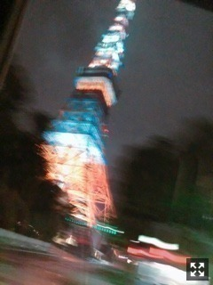
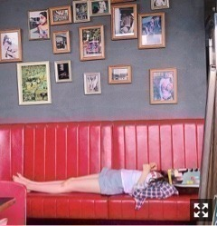
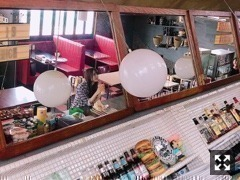

慎重にゆっくりと
みなさまこんにちは！！
乃木坂46の
梅澤美波です！！
セラミュパーカー！！
昨日TeamSTARは大千秋楽を終えました！
本日はTeamMOONの大千秋楽！
おめでとうございます！！
セラミュについては
セラミュの寂しさからか
今日はジュピターカラーの
緑の服きてまーす
アウターもスカートも緑
ああまこちゃん(；；)（笑）
服の色のレパートリー増やそう大作戦
実行中でございます∠( ˙-˙ )／
映画「累」が観たくて仕方ない梅澤です
だいぶ前に予告観た時から
ずっと気になってて
それに主題歌は大好きなAimerさんだし
観に行くしかないと思いきや
まだ行けてないの、、
今週少し時間出来そうだから
観てこよーっと☺︎
皆さんオススメの映画とかありますか？

通りすがりに撮った
東京タワー。
肉眼で見るとおっきいのに
真下から撮ったのに
写真じゃ伝わらない〜
夜の東京タワーすき
先日SHOWROOMさんにて発表されました
舞台「ザンビ」に
出演することになりました！
正直本当に急すぎて
気持ちが追いついていないのが事実でして
まだどうなるのか
私も想像ができません。
キャパも規模も大きいプロジェクトだから
プレッシャーがかなりありますが、、
ですが、坂道グループが
一緒に何かを造りあげること自体が
初めての試みであって、
そこに携われるのは有難く、
学ぶことが沢山あるんだろうなと感じています！
私自身、
今年４度目の舞台になります
セラミュが終わって
舞台がない生活が
今年に入って無かったので
なにか物足りなく感じるのかな〜と。
そう考えていた時のお話だったので
タイミングがびっくりというか、、
来るものは拒まず、
全て受け入れていきたい、
なんでも挑戦していきたいという
心意気を持って！頑張りたい！
ダブルキャストになっています！
チームブルー！
乃木坂からは私と久保ちゃん☺︎
欅坂さんからは
守屋茜さん菅井友香さん！
けやき坂さんからは
加藤史帆さん柿崎芽実さん！
皆さん初めましてだけど
素敵なものを作り上げていきたいなと
思っています！
そして久保ちゃん！
復帰後突然の舞台で
プレッシャーもあると思うけど
全力で支えたいと思うし、
久保ちゃんとは似てる部分もあるから
素敵なものにできる確信がある☺︎
SHOWROOM後すぐ連絡とりました。
最高のものに！
兎にも角にも！
頑張ります。

寝てみた。（笑）
この写真お気に入り〜
待ち受けにでもしちゃう？
（笑）

梅澤どこだ〜
先日、沈黙の金曜日！
花奈さんの代打で出演しました！
聴いてくださった方
観覧お越しくださった方
ありがとうございました！
たくさんの方がいらしてくれて、
聴いてくださって、
すごく嬉しかった〜
見られながらラジオするの
慣れなくて緊張しちゃったよ〜（笑）
とても楽しかったです！
とても楽しめました！
そして１０／５の沈金も
私が代打で出演します！
まさかの2週連続！わーい！
がんばるぞー！
台風が近づいているので
皆様お気をつけて(；；)
また更新します〜
前回同様まこちゃんメイクなので
濃いめな梅澤。
それじゃ、またね
おやすみ〜
何かを終えた時、達成感と喪失感に襲われます
すごく複雑な気持ちになります
先に見えるものに期待を抱いて前に進みます！今までもそうだったから！
Original：https://www.nogizaka46.com/s/n46/diary/detail/47164?ima=4949&cd=MEMBER